| Setting | What it does |
|---|---|
| Multiples of Quantity | Customers must order in packs of this size, e.g. 3, 6, 9 with a value of 3. |
| Start from the minimum | Part of Multiples of Quantity. Enabled: steps count from the Minimum Quantity, so a minimum of 5 with steps of 2 allows 5, 7, 9… Disabled: 6, 8, 10 (multiples of 2 from the minimum up). |
Let us sell the Mountain fox notebook in packs of three. Search for it.
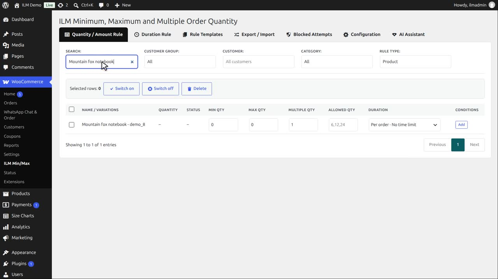
Type three in Multiple Qty and click away.
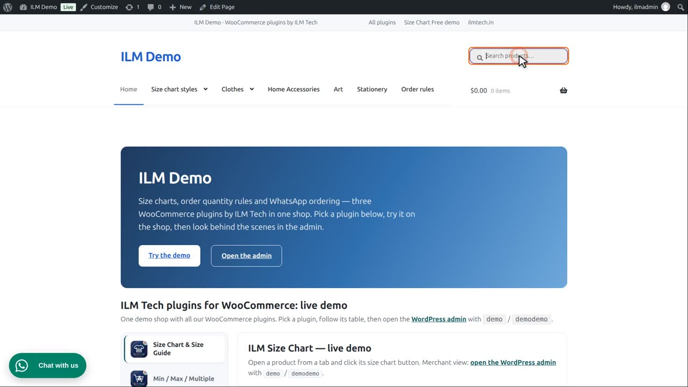
On the product page, one pack of three is the smallest order, so the quantity box starts at three.
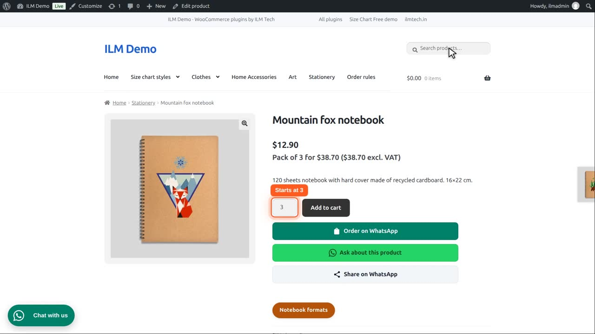
Under the price, the pack price is shown as well. Its wording and position are set on the Advanced tab.
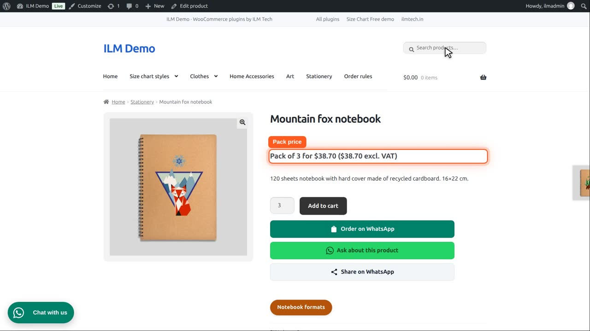
The arrows of the quantity box jump a whole pack at a time: six, then nine.
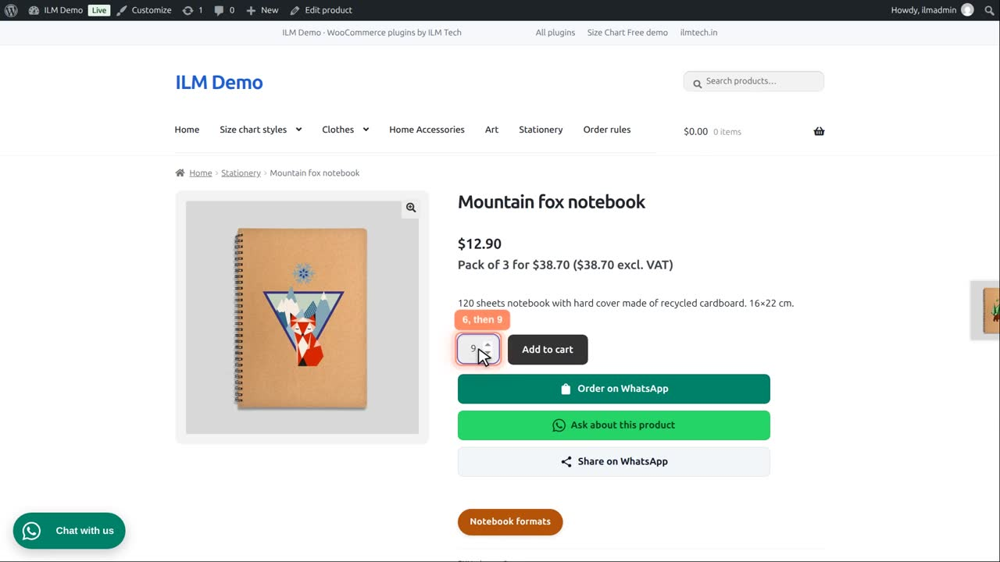
If they type four, the box asks for a whole pack: three or six.
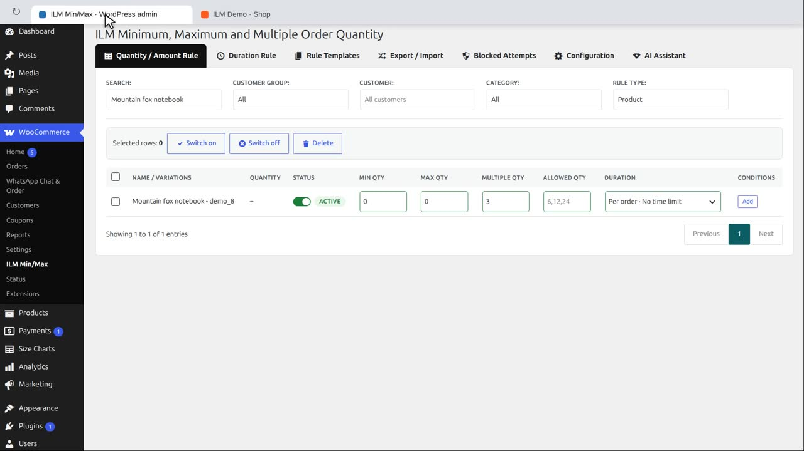
Now a minimum together with packs. On the Multiples of Quantity card, we enable Start from the minimum: the steps then count from the minimum.
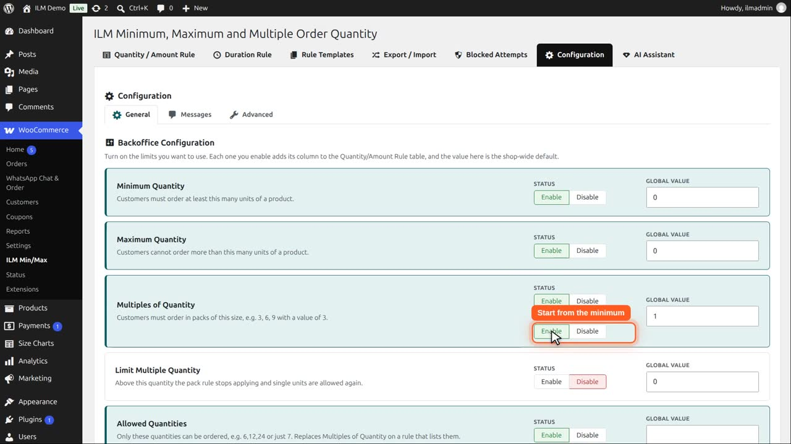
On the Brown bear notebook we set a minimum of five, in steps of two.
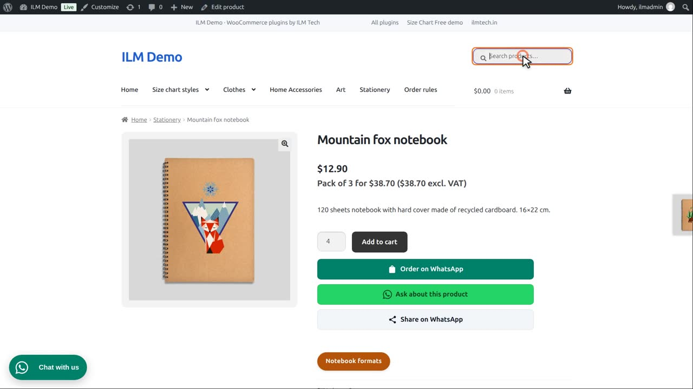
So the customer can order five, seven, nine, and so on. Let us add six and see what happens.
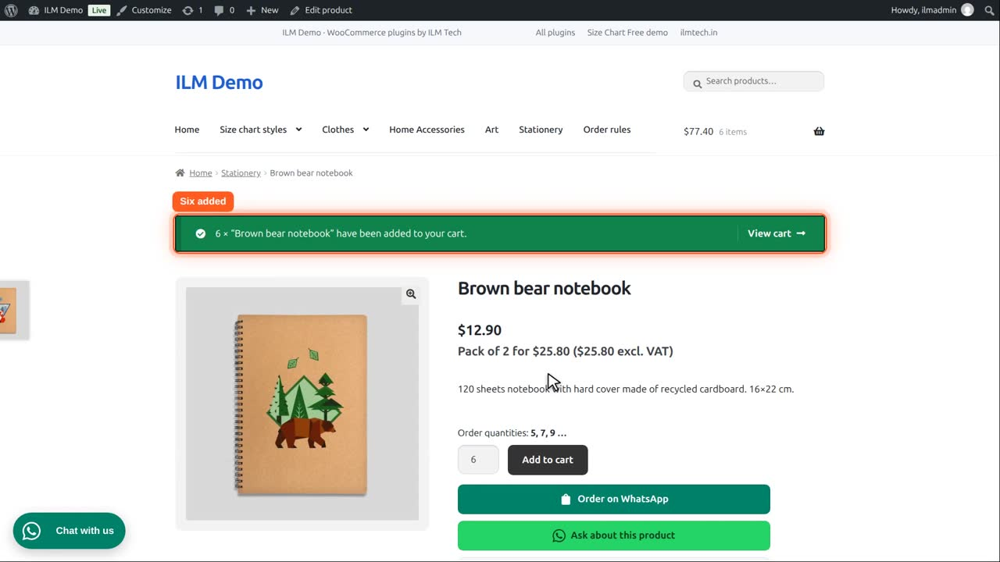
The cart says which quantities are possible, and checkout stays locked until the quantity fits.
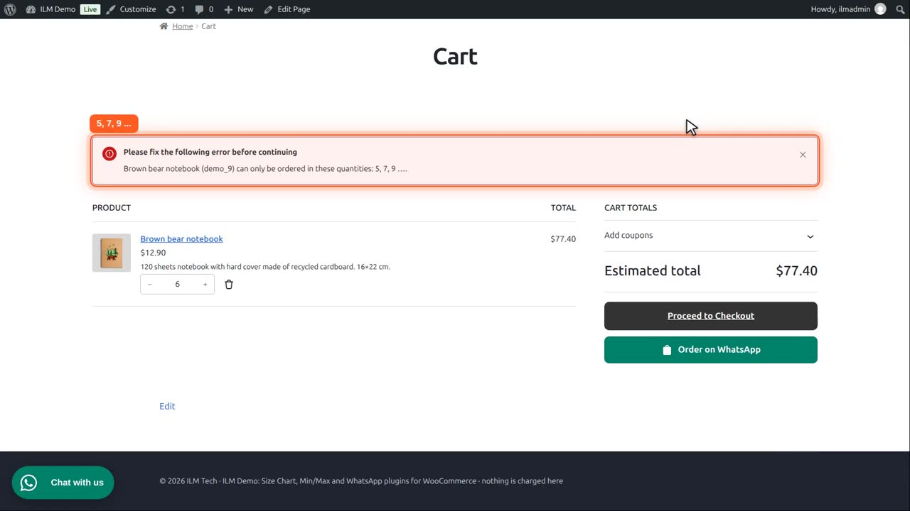
They change it to seven, and the message is gone.
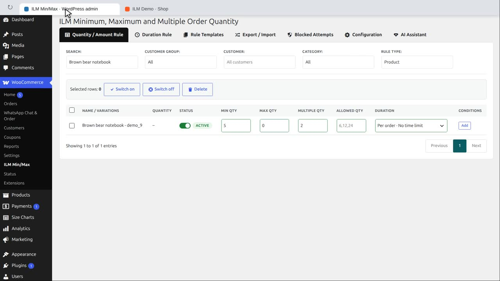
With Start from the minimum disabled, the quantities are whole multiples of the pack, and the minimum must be a multiple of it too: for example a minimum of six in steps of two gives six, eight, ten.